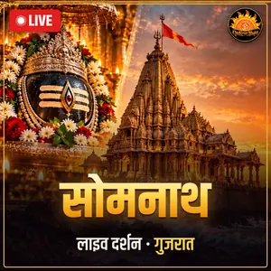

आज के लाइव दर्शन

स्रोत: मंदिर का आधिकारिक YouTube चैनल “Somnath Temple - Official Channel” — श्री सोमनाथ ट्रस्ट की वेबसाइट somnath.org अपने लाइव दर्शन पेज पर यही चैनल दिखाती है। वीडियो के सभी अधिकार उन्हीं के हैं। सभी मंदिरों के लाइव दर्शन
दर्शन और आरती का समय
| क्या | समय |
|---|---|
| मंदिर खुलता है | सुबह 6:00 |
| सुबह की आरती | सुबह 7:00 |
| दोपहर की आरती | दोपहर 12:00 |
| शाम की आरती | शाम 7:00 |
| ‘जय सोमनाथ’ लाइट एंड साउंड शो | रात लगभग 8:00 से 9:00 (बारिश के मौसम में नहीं) |
| मंदिर बंद होता है | रात 10:00 |
ट्रस्ट की वेबसाइट के अलग-अलग पेजों पर शो का समय 7:45 और 8:00 बजे लिखा है; बारिश के मौसम में आरती और शो का समय बदल सकता है।
दर्शन की व्यवस्था
- दर्शन मुफ़्त हैं, किसी टिकट की ज़रूरत नहीं।
- पूजा और दान श्री सोमनाथ ट्रस्ट की वेबसाइट somnath.org से होते हैं; प्रसाद भी ट्रस्ट की वेबसाइट पर दिए लिंक से मँगाया जा सकता है।
- मुख्य गेट पर बुज़ुर्गों और दिव्यांगों के लिए व्हीलचेयर और गोल्फ़ कार्ट मिलती है; मंदिर के अंदर लिफ़्ट भी है।
- आसपास के तीर्थ घूमने के लिए ट्रस्ट की ‘तीर्थ दर्शन’ बस मुख्य गेट से सुबह 8:30 और दोपहर 3:30 बजे चलती है (कम शुल्क)।
- नकली वेबसाइटों से सावधान: इंटरनेट पर इस मंदिर के नाम से मिलती-जुलती कई वेबसाइटें और WhatsApp नंबर ‘VIP दर्शन’ या टिकट बेचते हैं। बुकिंग सिर्फ़ नीचे दी गई आधिकारिक वेबसाइट या ऐप से करें, किसी एजेंट को पहले से पैसे न भेजें।
जाने से पहले ज़रूरी बातें
- मोबाइल और कैमरा: मोबाइल, कैमरा, स्मार्टवॉच, लैपटॉप, टैबलेट — सब मना हैं। क्लोक रूम के लॉकर मुफ़्त हैं।
- जूते-चप्पल क्लोक रूम के पास मुफ़्त जूता-घर में रखें।
- कपड़े: साड़ी, धोती, पैंट-टी-शर्ट चल जाते हैं; छोटे या अशोभनीय कपड़े पहनकर प्रवेश नहीं।
- मंदिर परिसर में फ़ोटो खींचना और धूम्रपान पूरी तरह मना है।
कहाँ ठहरें
श्री सोमनाथ ट्रस्ट के 200 से ज़्यादा कमरे वाले अतिथि गृह हैं — सागर दर्शन, लीलावती अतिथि भवन, माहेश्वरी समाज अतिथि गृह और एक सस्ती डॉरमेट्री। ट्रस्ट की वेबसाइट पर लिखे किराए के हिसाब से नॉन-AC कमरा लगभग ₹750 और डॉरमेट्री बेड लगभग ₹90 से शुरू होता है (GST अलग)। कमरे सिर्फ़ somnath.org से ऑनलाइन बुक करें।
कैसे पहुँचें
- रेल: सोमनाथ स्टेशन मंदिर से लगभग आधा किमी और वेरावल जंक्शन लगभग 7 किमी।
- हवाई: दीव हवाई अड्डा लगभग 85–95 किमी; राजकोट लगभग 200 किमी।
- सड़क: अहमदाबाद से लगभग 400 किमी; गुजरात के बड़े शहरों से सीधी बसें चलती हैं।
भीड़ कब कम रहती है
सावन के सोमवार, महाशिवरात्रि और कार्तिक पूर्णिमा पर सबसे ज़्यादा भीड़ होती है। आम दिनों में सुबह जल्दी या दोपहर की आरती के बाद दर्शन आसानी से हो जाते हैं। शाम की आरती और लाइट एंड साउंड शो एक साथ देखना हो तो 6:30 बजे तक पहुँच जाएँ।
जानकारी की जाँच: 16 नवंबर 2026। आधिकारिक वेबसाइट: somnath.org। मंदिर समय, शुल्क और नियम बदलते रहते हैं — यात्रा या भुगतान से पहले आधिकारिक वेबसाइट पर ज़रूर देखें।